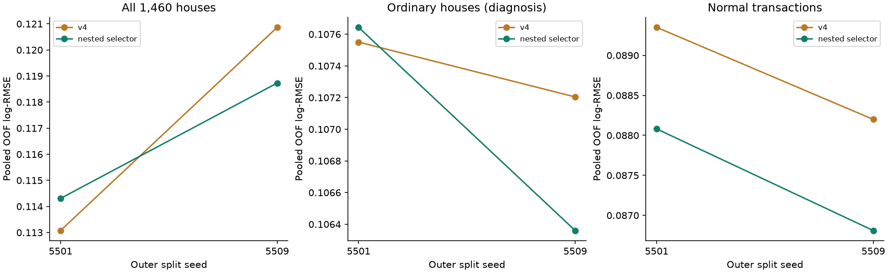
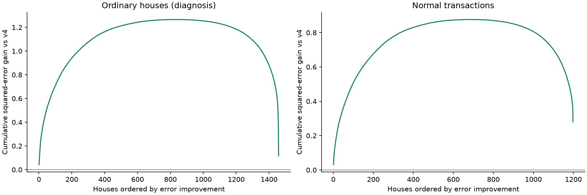

v5：用不同误差形态的模型改善普通房屋
v4 用户反馈线上最佳分数 0.11679。v5 尚未提交 Kaggle，线上成绩未知。 新文件：submission_v5.csv。本地分数不等于线上分数。
本轮实际尝试
初筛 24 个配置：SVR、RBF/多项式/Laplacian 核岭、紧凑物理特征的线性模型，正确中心化目标的 CatBoost Huber/MAE、LightGBM、XGBoost、sklearn Huber 提升树，折内目标编码，以及用交叉预测残差训练的线性模型加浅层树。
多数新树和目标编码方案对普通房屋没有净收益，未入选。CatBoost MAE 虽改善了初筛总体分数，却让普通房屋和 Normal 交易恶化，因此淘汰。最终冻结 3 个新候选：svr_compact_scaledcats, svr_compact_g001_C5, crossfit_en_residual_cat，共 15 个包含原 v4 的固定融合候选。详细负结果和公开方法来源见 研究笔记、核方法、树模型、目标编码。
怎样比较，避免只改善两套异常房屋
候选、门槛、权重与源代码在新外层计算前提交冻结（commit 389df4a）。外层使用全部 1,460 条数据的两次 5 折；每个外层训练子集内部重新做 3 折预测，依据全样本、普通房屋和 Normal 交易误差选择方案。只用内层选权重，外层评价这个自动选择过程；外层结果没有再用来挑具体配比。外层 selected 分数评价自动选择流程，并非最终固定配方的一份独立 OOF 分数。
每次 fit 的预处理和面积分位数只从该次训练行学习。大面积外推保护是在历史初筛后提出、外层计算前冻结的启发式：训练面积 q95 以下权重为 1，q95 到 q99 线性递减，q99 以上为 0；与不使用保护的方案一同进入内层比较。含核模型的等权组合使用共同保护，会整体缩小组合增量。它不是按 Id 或真实售价覆盖预测，所有验证样本均计入总体误差。
限制：初筛已经看过原 1,168 条开发房屋，这些房屋也出现在本轮外层中。因此这里只能称固定筛选名单后的嵌套拟合评估，不能声称整个长期模型搜索过程拥有无偏、全新独立验证。两次拆分还是同一批房屋。排除两套异常的指标仅为诊断。
全样本 · v4 → 自动选择流程
0.11697 → 0.11652
Normal 交易
0.08877 → 0.08745
不能把平均改善理解为全面稳定改善。seed5501 全样本从 0.11308 升至 0.11431，普通房屋也略退步；seed5509 改善更多，最终通过的是事先固定的两次均值门槛。全体与普通房屋的描述性 bootstrap 区间都包含零，去掉五笔最大正收益后净平方误差收益分别为 −0.27214、−0.02757，仍有收益集中。Normal 成交则十个外层折均改善，其描述性区间完全为正，去掉五笔最大正收益后仍有 +0.17551 净收益；这一证据仅适用于该组。面积>2500、Abnorml 成交及 2007 年组均退步，完整数值保留在分组表中。

| group |
rows |
v4_mean_split_rmse |
selected_mean_split_rmse |
rmse_improvement |
fraction_houses_with_positive_mse_gain |
net_squared_error_gain |
| all |
1460 |
0.116971 |
0.116518 |
0.000453 |
0.568493 |
0.169301 |
| ordinary_without_two_extremes_diagnostic |
1458 |
0.107377 |
0.107002 |
0.000375 |
0.568587 |
0.116716 |
| normal_transactions |
1198 |
0.088775 |
0.087445 |
0.001329 |
0.570117 |
0.280555 |
| area_le_1500 |
785 |
0.113719 |
0.113482 |
0.000237 |
0.566879 |
0.042043 |
| area_1500_2500 |
605 |
0.095875 |
0.093526 |
0.002348 |
0.573554 |
0.269266 |
| area_gt_2500 |
70 |
0.244157 |
0.250257 |
-0.006101 |
0.542857 |
-0.142008 |
| large_normal_transactions |
47 |
0.114992 |
0.114667 |
0.000325 |
0.531915 |
0.002851 |
外层发布门槛：全样本均值最多回退 0.0003，且普通房屋及 Normal 交易均改善；本轮门槛结果为 True。不把各折视为独立样本计算显著性；按房屋配对的 5,000 次 bootstrap 只是给定共享训练数据的这些交叉预测后的描述性区间，不是整个模型开发流程的泛化置信区间。相应区间和去掉最大五笔正收益后的集中度检查见 JSON。

面积保护在至少一个外层拆分影响 67 套训练房屋，不只那两套异常。大面积普通交易及按年份分组的完整结果见 CSV；逐房屋收益见 CSV。
每一外层折的选择和分数
| seed |
fold |
recipe |
v4_all |
selected_all |
v4_normal |
selected_normal |
| 5501 |
0 |
svr_compact_g001_C5_w0.3_support |
0.135743 |
0.135997 |
0.108475 |
0.108303 |
| 5501 |
1 |
svr_compact_scaledcats_w0.3_support |
0.092244 |
0.091967 |
0.083081 |
0.082793 |
| 5501 |
2 |
svr_compact_g001_C5_w0.3_support |
0.105379 |
0.102042 |
0.081853 |
0.078945 |
| 5501 |
3 |
svr_compact_g001_C5_w0.3_support |
0.106658 |
0.106193 |
0.083401 |
0.082034 |
| 5501 |
4 |
svr_compact_g001_C5_w0.3_uniform |
0.120477 |
0.129176 |
0.087357 |
0.085275 |
| 5509 |
0 |
svr_compact_scaledcats_w0.3_support |
0.105765 |
0.103204 |
0.091718 |
0.089889 |
| 5509 |
1 |
svr_compact_g001_C5_w0.3_uniform |
0.163152 |
0.159307 |
0.079166 |
0.077487 |
| 5509 |
2 |
svr_compact_g001_C5_w0.3_support |
0.115400 |
0.114498 |
0.096697 |
0.095083 |
| 5509 |
3 |
svr_compact_g001_C5_w0.3_uniform |
0.103112 |
0.102319 |
0.077439 |
0.075770 |
| 5509 |
4 |
svr_compact_g001_C5_w0.3_support |
0.106252 |
0.104291 |
0.094295 |
0.094022 |
最终提交文件
最终在全 1,460 条训练数据内部按同一 3 折选择规则（seed24501）选定 svr_compact_g001_C5_w0.3_support。这个最终选择可能与个别外层折不同，属于同一训练流程。具体为新增模型 svr_compact_g001_C5，新增权重 30%，面积保护 True；对数预测公式为 v4 + weight × support × (new - v4)。已保存的 v4 预测直接复用，新增模型在全部训练行拟合，验证与最终训练采用相同种子策略。
文件包含 1459 条官方测试数据，Id 顺序正确，房价为有效正数。SHA-256：a48b84f57802f0adf5b7344a3b8ba7cdbf31a18bf7e8ff1c670be48bb4fb05db。v1–v4 原提交文件保持不变。已保存模型、权重和面积阈值；执行 sh scripts/run.sh scripts/predict_v5.py 可复现预测并检查原文件。
本轮外层与最终选择缓存保存 559 次估计器 fit 调用；残差模型内部另有 516 次 EN fit。该数不包含初筛、调试及因源代码变更而重跑的操作，不能与独立配置数混用。
公开讨论中存在对近零分使用外部 Ames 真实售价的质疑，不能据此判断 Ran 或其他具体参赛者。本轮没有下载外部真实售价或公开答案，也没有用测试 Id 查表填值。
最终方案 · 冻结候选 · 协议及修订 · 发布门槛 · 模型清单 · 运行审计 · 版本记录。